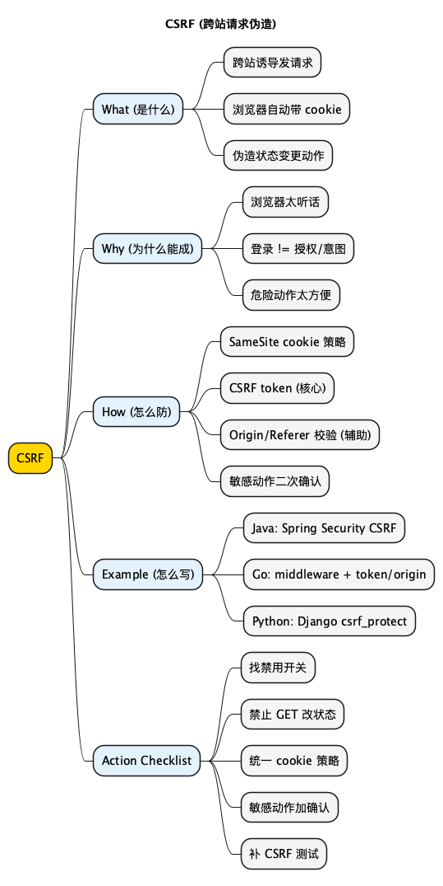

CSRF：Cross-Site Request Forgery (跨站请求伪造)
Posted on Mon 02 March 2026 in Tech • 3 min read
| Abstract | CSRF: Cross-Site Request Forgery (跨站请求伪造) |
|---|---|
| Authors | Walter Fan |
| Category | tech note |
| Status | v1.0 |
| Updated | 2026-03-02 |
| License | CC-BY-NC-ND 4.0 |
CSRF：Cross-Site Request Forgery (跨站请求伪造)
一句话版：你以为你在刷网页，攻击者在"借你的身份发指令"。
CSRF 这玩意儿，说白了就是"冒用身份"。
它不需要拿到你的密码，也不需要在你的站点里写脚本。它只需要做到一件事：让你的浏览器，在你已经登录的情况下，帮它发一条请求。
🟢 问题：CSRF 和 XSS 有啥区别？
- XSS：往你页面里塞脚本，在你家客厅里搞事情
- CSRF：不进你家，站在门外喊你老妈"把钱转了" (而你妈以为是你吩咐的)
What：CSRF 到底是什么
CSRF (Cross-Site Request Forgery) 的关键点就三个：
- 跨站：请求是从别的网站发起的
- 借身份：浏览器会自动带上你的 cookie (或某些自动附带的凭证)
- 伪造动作：伪造的是"状态改变"的请求，比如转账、改邮箱、改收货地址、绑定设备、加管理员
一句话总结：
只要你的系统用 cookie/session 维持登录态，又允许跨站诱导发起状态变更请求，就有 CSRF 的风险。
🟢 问题：这里的"跨站诱导"到底是怎么诱导？
最常见的套路是"钓鱼页 + 自动提交"。比如你点开一个页面, 它在后台悄悄塞了个表单, 自动 POST 到你的站点。
你可能会问: "跨域不是不让读响应吗？"
对, 这就是 CSRF 阴险的地方: 它不需要读响应, 只需要让动作发生。转账成功了没, 你后面再看账单就知道了。
Why：它为什么能成功
1) 浏览器太"听话"
你只要登录过 A 网站，浏览器就会在访问 A 网站时自动携带 cookie。攻击者利用的就是这个"自动"。
2) 你把"谁发起的请求"和"谁应该被允许"混在了一起
很多接口只检查：
- "这个请求有没有 session" (有)
却没检查：
- "这个请求是不是从我们自己的页面发起的" (不知道)
- "这个动作有没有用户的明确确认" (没有)
3) 你把危险动作做得太方便
如果你的转账接口支持 GET，或者允许 POST /transfer?to=...&amount=...，那就等于给攻击者铺好了路。
🟢 问题：为什么说"GET 不能改状态"？
因为 GET 天生容易被"顺手触发": 浏览器预加载、爬虫抓取、页面里的一个 <img src=...> 都可能把 GET 打出去。
你把改状态藏在 GET 里, 等于把"危险动作"做成了"随便碰一下就会响"的按钮。
🔵 反思：你们有没有这种接口？
- 改密码/改邮箱/绑定手机号，一次请求就完成
- 没有二次确认，没有验证码，也没有风控
- 后端不校验 Origin/Referer，也不要求 CSRF token
有一个就够你喝一壶。
How：防 CSRF，先记住两条硬规则
规则 1："危险动作"一律要求不可伪造的用户意图
常用办法：
- CSRF token (同步 token / double submit cookie)
- 对敏感动作加二次确认 (re-auth、短信/邮箱验证码)
🟢 问题：CSRF token 是啥？为什么它能防？
你可以把它理解成"你家门口的暗号"。
- 你的页面里会带着这个暗号 (比如写在隐藏字段里, 或放在 header 里)
- 攻击者的网站拿不到暗号
所以它就算能让浏览器把请求发出去, 也过不了服务端校验。
规则 2：别指望前端，服务端必须兜底
你可以在前端加按钮确认，但服务端仍然要验证：
- CSRF token
- 或 Origin/Referer (适合作为辅助, 不能当唯一依赖)
How：你可以落地的四件事 (按性价比排序)
1) 正确使用 SameSite Cookie
如果你用 cookie 做会话，先把默认值想清楚：
SameSite=Lax：大多数场景能挡住"第三方站点自动提交表单"这类 CSRFSameSite=Strict：更严格，但可能影响正常跳转体验SameSite=None; Secure：允许跨站携带 cookie (通常用于 SSO/跨站嵌套)，但风险更高
一句话：能不用 None 就别用 None。
🟢 问题：SameSite=Lax/Strict/None, 到底怎么选？
Lax: 默认首选。大多数站点够用, 兼容性也好。Strict: 更像"严防死守"。安全更强, 但可能把一些正常跳转也拦了 (比如从外部链接点进来后再操作)。None: 你明确需要"跨站也带 cookie"时才用, 并且必须配Secure。一旦用它, CSRF token 基本就别省了。
2) 对所有状态变更请求启用 CSRF token
token 的意义是：攻击者的网站拿不到这个 token，就算能发请求，也过不了校验。
🟢 问题："同步 token" 和 "double submit cookie" 是啥区别？
- "同步 token": token 放在服务器 session 里, 每次请求带上, 服务端对比。
- "double submit cookie": token 放在 cookie 里, 同时也要在 header/表单里再带一份, 服务端要求两份一致。
你不必死记术语。记住那句人话就够了: 服务端要看到"页面里那份 token", 才算你本人点的。
3) 校验 Origin/Referer (当作安全带)
- 优先校验
Origin Origin没有时再看Referer- 校验结果最好做 allowlist (只允许你自己的域名)
🟢 问题：为什么它只能当"辅助"？
因为有些场景 header 可能缺失或被代理改写, 你不能把它当成唯一凭证。但作为"多一道闸", 它很便宜, 也很有效。
4) 把危险动作做"不方便"
听起来反人类，其实是救命：
- 改绑邮箱/手机号：要求重新登录或 OTP
- 转账/提现吗：多一步确认 + 风控
- 删除/重置：增加确认口令 (比如输入 "DELETE")
目的无他：让"误触发"和"被诱导"都没那么容易。
Example：三段你可以直接抄的示例 (Java/Go/Python)
Java (Spring Security)：默认开启 CSRF，别手贱关掉
@Bean
SecurityFilterChain securityFilterChain(HttpSecurity http) throws Exception {
http
.csrf(csrf -> csrf
// 默认就是启用, 这里只是显式写出来, 让人别误删
.csrfTokenRepository(CookieCsrfTokenRepository.withHttpOnlyFalse())
)
.authorizeHttpRequests(auth -> auth
.requestMatchers("/api/**").authenticated()
.anyRequest().permitAll()
);
return http.build();
}
🟢 问题：为什么很多人会翻车？
因为有人为了"接口调试方便"，顺手来了句 .csrf(AbstractHttpConfigurer::disable)。
这句一旦进了主干，你就等着被 CSRF 教做人。
Go (Gin)：用 middleware 校验 CSRF token + Origin
下面是"最小可用"的思路示意：生产里你最好用成熟库 (比如 gorilla/csrf)，但原理就这样。
func CSRFMiddleware(allowedOrigin string) gin.HandlerFunc {
return func(c *gin.Context) {
if c.Request.Method == http.MethodGet || c.Request.Method == http.MethodHead {
c.Next()
return
}
origin := c.GetHeader("Origin")
if origin != "" && origin != allowedOrigin {
c.AbortWithStatus(http.StatusForbidden)
return
}
token := c.GetHeader("X-CSRF-Token")
if token == "" {
c.AbortWithStatus(http.StatusForbidden)
return
}
// TODO: 校验 token (比如和 session 绑定，或者 double submit cookie)
c.Next()
}
}
Python (Django)：你只要别绕开它，基本就稳
from django.views.decorators.csrf import csrf_protect
from django.http import JsonResponse
@csrf_protect
def change_email(request):
if request.method != "POST":
return JsonResponse({"error": "method not allowed"}, status=405)
# ... 正常业务逻辑 ...
return JsonResponse({"ok": True})
如果你用的是 Django/DRF，不要随手加 @csrf_exempt。它就像把门锁拆了，说"我只是临时进出方便"。
Summary：CSRF 的核心，其实是"确认意图"
CSRF 不高深，它盯着的是你系统里最朴素的假设：
"只要 cookie 在, 就是本人操作。"
这句话在互联网时代不成立。
所以你需要把系统改成：
"只要是危险动作，就必须能证明这是用户在你站点里亲自点的。"
明天就能做的 5 件事 (Checklist)
- [ ] 全局搜
.csrf().disable/csrf_exempt：找到就评估风险，能删就删 - [ ] 把所有状态变更接口过一遍：只允许 POST/PUT/PATCH/DELETE，禁止 GET 改状态
- [ ] 统一 cookie 策略：优先
SameSite=Lax; Secure; HttpOnly - [ ] 对敏感动作加二次确认：改邮箱/改手机号/转账/提现/删数据
- [ ] 补两条测试：无 token -> 403，跨域 Origin -> 403
扩展阅读
- OWASP Cheat Sheet Series - Cross-Site Request Forgery Prevention Cheat Sheet (CSRF 防护大全)
- MDN - SameSite cookies (SameSite 细节和兼容性)
思维导图
@startmindmap
<style>
mindmapDiagram {
node { BackgroundColor #FAFAFA }
:depth(0) { BackgroundColor #FFD700 }
:depth(1) { BackgroundColor #E3F2FD }
:depth(2) { BackgroundColor #F5F5F5 }
}
</style>
title CSRF (跨站请求伪造)
* CSRF
** What (是什么)
*** 跨站诱导发请求
*** 浏览器自动带 cookie
*** 伪造状态变更动作
** Why (为什么能成)
*** 浏览器太听话
*** 登录 != 授权/意图
*** 危险动作太方便
** How (怎么防)
*** SameSite cookie 策略
*** CSRF token (核心)
*** Origin/Referer 校验 (辅助)
*** 敏感动作二次确认
** Example (怎么写)
*** Java: Spring Security CSRF
*** Go: middleware + token/origin
*** Python: Django csrf_protect
** Action Checklist
*** 找禁用开关
*** 禁止 GET 改状态
*** 统一 cookie 策略
*** 敏感动作加确认
*** 补 CSRF 测试
@endmindmap

本作品采用知识共享署名-非商业性使用-禁止演绎 4.0 国际许可协议进行许可。